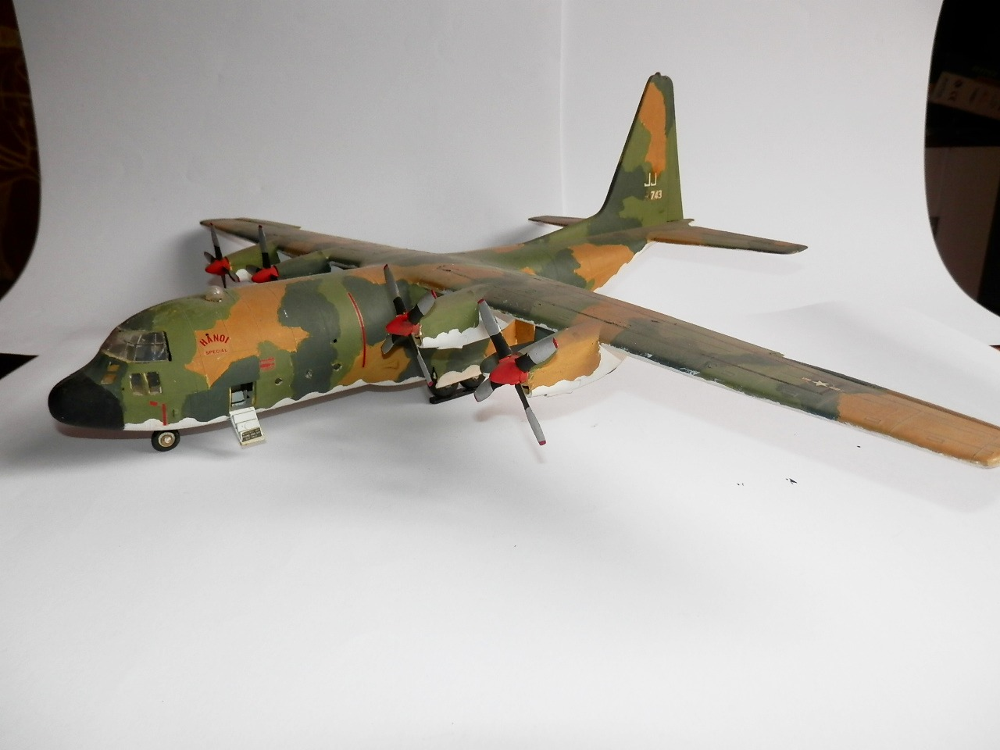
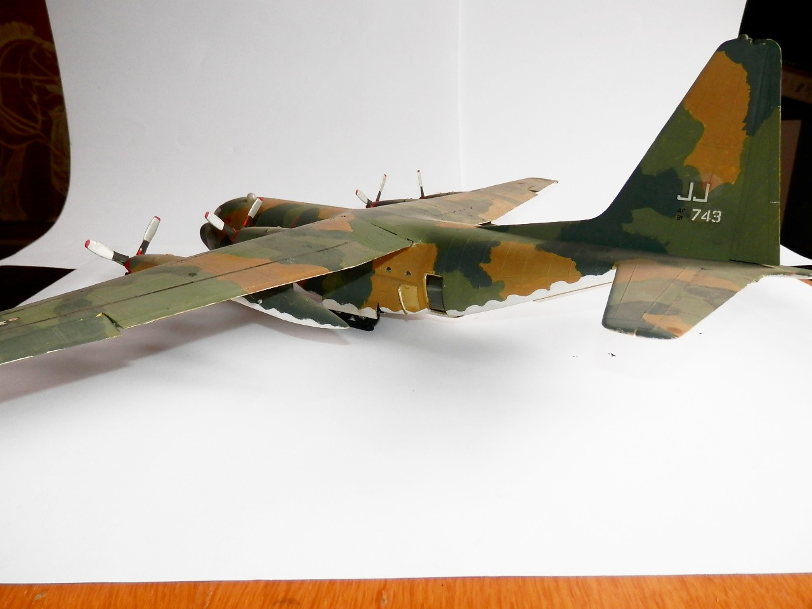

Aerei · scale model archive
Lockheed C130 Hercules
Lockheed C130 Hercules — Kit: Airfix, Scale: 1/72. The kit originally reproduced the British version (including Land Rover and Bloodhound missile) but I…

Photo gallery

English description
The kit originally reproduced the British version (including Land Rover and Bloodhound missile) but I liked more the Vietnam camo. it has only just dawned on me that this kit, like so many others in the collection, was assembled in the mid-'70s—which, what ho, means a good half-century has slipped by!
Descrizione italiana
Il kit riproduceva originariamente la versione britannica, includendo Land Rover e missile Bloodhound, ma io preferivo la mimetica Vietnam. È appena assemblato e richiederà ancora parecchio lavoro.